Code
library(dplyr)
library(tidyr)
library(lubridate)
library(TTR)
library(forecast)
library(ggpubr)
library(tseries)
library(zoo)
library(readr)
library(ggplot2)
library(plotly)
library(tibble)
library(tidyquant)
library(gridExtra)library(dplyr)
library(tidyr)
library(lubridate)
library(TTR)
library(forecast)
library(ggpubr)
library(tseries)
library(zoo)
library(readr)
library(ggplot2)
library(plotly)
library(tibble)
library(tidyquant)
library(gridExtra)In this page, we will do ARIMA and SARIMA based on the previous page EDA of natural gas production and prices.
From the previous Exploratory Data Analysis, we get the following information :
1. Before differencing, there is significant autocorrelation in the time series, the ACF is significant at lag 1 and then decreases gradually, and the PACF decays rapidly at lag 1, indicating that the data are non-stationary.
2. After the first order differencing, the data are relatively stable, but the Augmented Dickey-Fuller Test confirms that the data are still non-stationary. So we will perform a second order difference to try to make the data stationary.
3. The p value of Augmented Dickey-Fuller Test of Second difference is smaller than 0.5, which means the data is stationary.
based on the plot:
# ACF
p1 <- ggAcf(price_ts_diff, lag.max = 36) +
ggtitle("ACF of Differenced Natural Gas Prices")
# PACF
p2 <- ggPacf(price_ts_diff, lag.max = 36) +
ggtitle("PACF of Differenced Natural Gas Prices")
grid.arrange(p1, p2, ncol = 2)
p_values <- c(0, 1, 2)
d_values <- c(2)
q_values <- c(0, 1, 2)
model_results <- tibble(
Model = character(),
AIC = numeric(),
BIC = numeric(),
RMSE = numeric()
)
for (p in p_values) {
for (d in d_values) {
for (q in q_values) {
model_name <- paste0("ARIMA(", p, ",", d, ",", q, ")")
model <- Arima(ts_us_gas, order = c(p, d, q))
rmse <- sqrt(mean(residuals(model)^2, na.rm = TRUE))
model_results <- model_results %>%
add_row(Model = model_name, AIC = model$aic, BIC = model$bic, RMSE = rmse)
}
}
}
print(model_results)# A tibble: 9 × 4
Model AIC BIC RMSE
<chr> <dbl> <dbl> <dbl>
1 ARIMA(0,2,0) 739. 741. 285.
2 ARIMA(0,2,1) 721. 725. 232.
3 ARIMA(0,2,2) 721. 726. 226.
4 ARIMA(1,2,0) 738. 742. 275.
5 ARIMA(1,2,1) 722. 728. 230.
6 ARIMA(1,2,2) 720. 728. 220.
7 ARIMA(2,2,0) 722. 728. 230.
8 ARIMA(2,2,1) 717. 724. 213.
9 ARIMA(2,2,2) 718. 728. 213.Based on the result, ARIMA(2,2,1) is the best model, cause it has smaller AIC(716.5059) and BIC(724.3108), and the RMSE is smaller than other model.
Base on the model ARIMA(2,2,1), We write this equation.
best_model <- Arima(ts_us_gas, order = c(2,2,1))
summary(best_model)Series: ts_us_gas
ARIMA(2,2,1)
Coefficients:
ar1 ar2 ma1
0.0247 -0.4174 -0.6968
s.e. 0.1521 0.1367 0.1283
sigma^2 = 50011: log likelihood = -354.25
AIC=716.51 AICc=717.36 BIC=724.31
Training set error measures:
ME RMSE MAE MPE MAPE MASE ACF1
Training set 27.35006 213.026 164.5701 0.4066396 2.951763 0.1488864 0.0100288\[ \Delta^2 y_t = 0.0247 \cdot \Delta^2 y_{t-1} - 0.4174 \cdot \Delta^2 y_{t-2} + \varepsilon_t - 0.6968 \cdot \varepsilon_{t-1} \]
Here we will do the model Diagnotic
library(tseries)
par(mfrow = c(2,2))
autoplot(residuals(best_model)) +
ggtitle("Residuals of ARIMA(2,2,1)")
acf(residuals(best_model), main="ACF of Residuals for ARIMA(2,2,1)")
qqnorm(residuals(best_model))
qqline(residuals(best_model), col="red")
Box.test(residuals(best_model), lag=10, type="Ljung-Box")
Box-Ljung test
data: residuals(best_model)
X-squared = 3.3906, df = 10, p-value = 0.9707
The residual plots show that the residuals fluctuate around the zero mean with no clear trend or pattern. It shows that the model fits the data better. The ACF plot shows that the autocorrelation of the residuals is low and all the lags are within the blue dashed line (95% confidence interval), indicating that the residuals are almost white noise.The Q-Q plot shows how well the distribution of the residuals fits the data relative to the normal distribution.The Box-Ljung test p-value is 0.9707, which is much larger than 0.05, which suggests that the original hypothesis cannot be rejected, i.e., the residuals are white noise.
auto_model <- auto.arima(ts_us_gas)
print(auto_model)Series: ts_us_gas
ARIMA(2,2,1)
Coefficients:
ar1 ar2 ma1
0.0247 -0.4174 -0.6968
s.e. 0.1521 0.1367 0.1283
sigma^2 = 50011: log likelihood = -354.25
AIC=716.51 AICc=717.36 BIC=724.31manual_model <- Arima(ts_us_gas, order = c(2,2,1))
model_comparison <- data.frame(
Model = c("Manual ARIMA(2,2,1)", paste0("Auto ", auto_model)),
AIC = c(AIC(manual_model), AIC(auto_model)),
BIC = c(BIC(manual_model), BIC(auto_model)),
RMSE = c(sqrt(mean(residuals(manual_model)^2, na.rm = TRUE)),
sqrt(mean(residuals(auto_model)^2, na.rm = TRUE)))
)
print(model_comparison) Model AIC BIC RMSE
1 Manual ARIMA(2,2,1) 716.5059 724.3108 213.026
2 Auto ARIMA(2,2,1) 716.5059 724.3108 213.026The best model from auto.arima is the same as the one we chose manually, and both AIC, BIC and RMSE is same. This suggests that the p,d,q choices we made based on ACF, PACF, and differential stability analysis are reasonable.
library(ggplot2)
library(forecast)
ts_us_gas <- ts(us_gas$Production, start = min(us_gas$Year), frequency = 1)
forecast_horizon <- 10
best_model <- Arima(ts_us_gas, order = c(2,2,1))
arima_forecast <- forecast(best_model, h = forecast_horizon)
autoplot(arima_forecast) +
labs(title = "Forecast using ARIMA(2,2,1)",
x = "Year", y = "Predicted Values")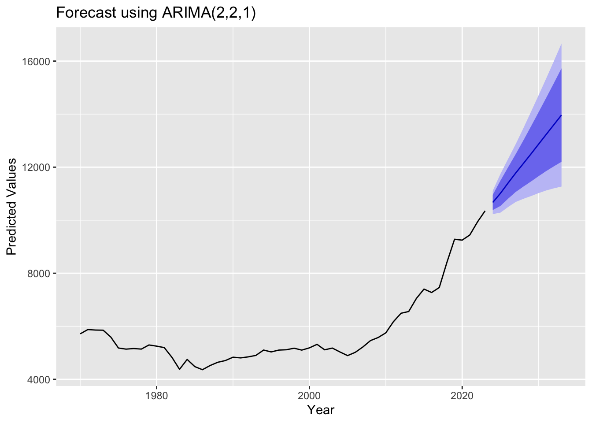
The forecast graph shows that natural gas production is expected to continue to rise over the next 10 years.
Confidence intervals provide a range of uncertainty in a forecast. The dark blue area: 80% confidence interval, indicates a higher probability that future forecasts will fall within this interval, and the light blue area: 95% confidence interval, indicates a higher probability that forecasts will fall within this interval, but the range is wider, reflecting greater uncertainty.
forecast_horizon <- 10
best_model <- Arima(ts_us_gas, order = c(2,2,1))
arima_forecast <- forecast(best_model, h = forecast_horizon)
mean_forecast_values <- rep(mean(ts_us_gas), forecast_horizon)
moving_avg_forecast_values <- rep(mean(tail(ts_us_gas, 5)), forecast_horizon)
random_walk_forecast_values <- rep(tail(ts_us_gas, 1), forecast_horizon)
exp_smooth_model <- ets(ts_us_gas)
exp_smooth_forecast <- forecast(exp_smooth_model, h = forecast_horizon)
forecast_df <- data.frame(
Year = seq(end(ts_us_gas)[1] + 1, by = 1, length.out = forecast_horizon),
ARIMA = arima_forecast$mean,
Mean_Forecast = mean_forecast_values,
Moving_Avg = moving_avg_forecast_values,
Random_Walk = random_walk_forecast_values,
Exp_Smooth = exp_smooth_forecast$mean
)
forecast_df_long <- forecast_df %>%
pivot_longer(cols = -Year, names_to = "Model", values_to = "Forecast")
ggplot(forecast_df_long, aes(x = Year, y = Forecast, color = Model)) +
geom_line(size = 1) +
labs(title = "Comparison of ARIMA and Benchmark Methods",
x = "Year",
y = "Predicted Values",
color = "Model") 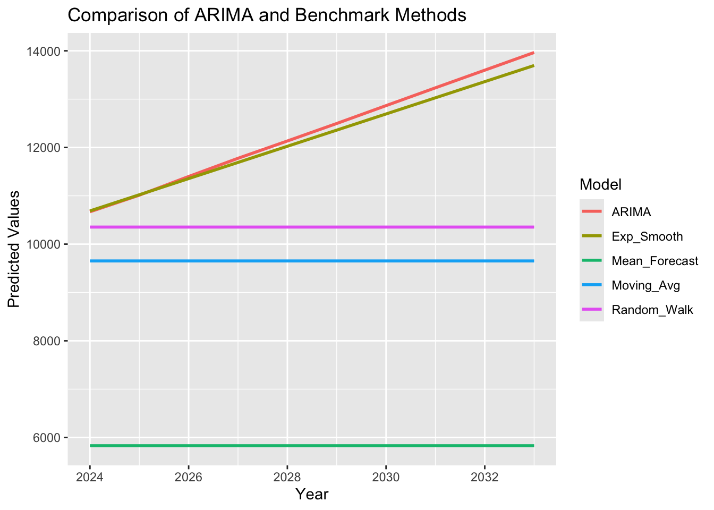
From Exploratory Data Analysis, we have did the ACF and PACF, and the Augmented Dickey-Fuller Test, the p-value is 0.1 which means the data is stationary, we don’t need to do differencing.
adf.test(price_ts_diff)
Augmented Dickey-Fuller Test
data: price_ts_diff
Dickey-Fuller = -5.4792, Lag order = 5, p-value = 0.01
alternative hypothesis: stationaryHere is the graph of ACF and PACF:
library(gridExtra)
# ACF
p1 <- ggAcf(price_ts_diff, lag.max = 36) +
ggtitle("ACF of Differenced Natural Gas Prices")
# PACF
p2 <- ggPacf(price_ts_diff, lag.max = 36) +
ggtitle("PACF of Differenced Natural Gas Prices")
grid.arrange(p1, p2, ncol = 2)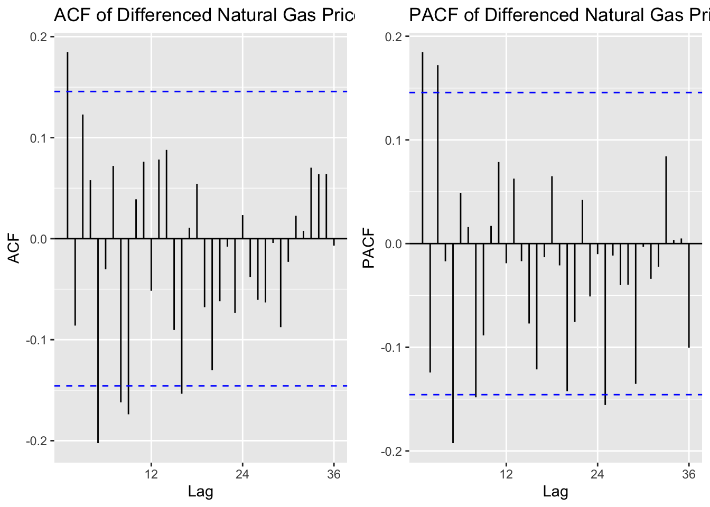
Looking at the PACF, Lag 1 significantly exceeds the confidence interval, Lag 2 and subsequent lags decay rapidly and fall into the confidence interval, so I choose p=1, in the ACF, Lag 1 is significantly positively correlated and far exceeds the confidence interval, most of the lags from Lag 2~Lag 36 fluctuate less, and some of them are slightly beyond the confidence interval, but overall there is no consecutive significant lag or cyclical pattern, so q=1, and we have already done one difference before, so d=1. 1, before we have done a differencing, so d=1
model_010 <- Arima(ts_natgas_monthly, order = c(0, 1, 0))
model_011 <- Arima(ts_natgas_monthly, order = c(0, 1, 1))
model_110 <- Arima(ts_natgas_monthly, order = c(1, 1, 0))
model_111 <- Arima(ts_natgas_monthly, order = c(1, 1, 1))
aic_compare <- AIC(model_010, model_011, model_110, model_111)
bic_compare <- BIC(model_010, model_011, model_110, model_111)
print(aic_compare) df AIC
model_010 1 242.2507
model_011 2 235.6020
model_110 2 237.9544
model_111 3 235.3642print(bic_compare) df BIC
model_010 1 245.4492
model_011 2 241.9990
model_110 2 244.3514
model_111 3 244.9597Fit all model, we find that ARIMA(1,1,1) is the best model, cause it has lower AIC, it indicates the best fit
\[ \Delta y_t = -0.2982 \cdot \Delta y_{t-1} + \varepsilon_t + 0.5466 \cdot \varepsilon_{t-1} \]
summary(model_111)Series: ts_natgas_monthly
ARIMA(1,1,1)
Coefficients:
ar1 ma1
-0.3057 0.5437
s.e. 0.1919 0.1649
sigma^2 = 0.2101: log likelihood = -114.68
AIC=235.36 AICc=235.5 BIC=244.96
Training set error measures:
ME RMSE MAE MPE MAPE MASE
Training set -0.008695573 0.4546056 0.3189351 -0.7856635 9.269679 0.2686084
ACF1
Training set -0.0122801checkresiduals(model_111)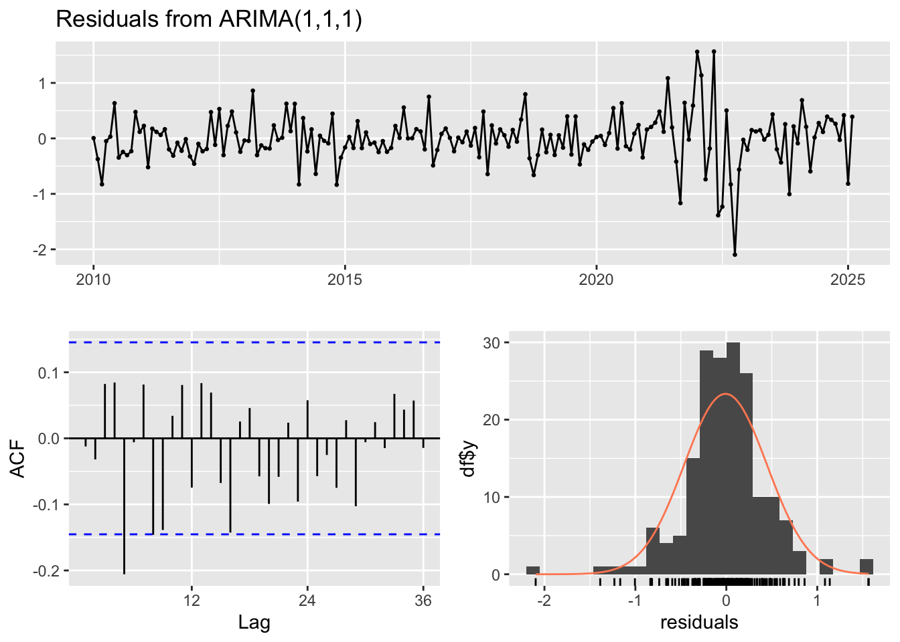
Ljung-Box test
data: Residuals from ARIMA(1,1,1)
Q* = 36.639, df = 22, p-value = 0.0259
Model df: 2. Total lags used: 24The time series plot of the residuals shows that the residuals fluctuate around zero, with no obvious trend or structural change, and the variance is relatively stable; most of the lagged orders in the ACF plot of the residuals fall within the confidence intervals, and no systematic autocorrelation is observed. The histogram of residuals is close to normal distribution, which supports the subsequent confidence prediction. However, the p-value of Ljung-Box test is 0.01752, which is lower than the significance level of 0.05, indicating that the residuals may still contain a small amount of unmodeled structure.
auto_model <- auto.arima(ts_natgas_monthly, seasonal = FALSE)
summary(auto_model)Series: ts_natgas_monthly
ARIMA(1,0,1) with non-zero mean
Coefficients:
ar1 ma1 mean
0.8865 0.3137 3.4924
s.e. 0.0371 0.0837 0.3687
sigma^2 = 0.2026: log likelihood = -112.5
AIC=233 AICc=233.22 BIC=245.81
Training set error measures:
ME RMSE MAE MPE MAPE MASE
Training set -0.01314029 0.4463363 0.3142812 -1.804642 9.225536 0.2646889
ACF1
Training set -0.0362512The optimal model obtained using the auto.arima() automatic model selection function is ARIMA(1,0,1), which is different from the manually selected ARIMA(1,1,1). The main reason for this is that the automatic model judged that the original series had satisfied the smoothness requirement and therefore was not differenced (d = 0). The automatic selection model has a lower AIC value
\[ y_t = \mu + 0.8850 \cdot y_{t-1} + \varepsilon_t + 0.3279 \cdot \varepsilon_{t-1} \]
checkresiduals(auto_model)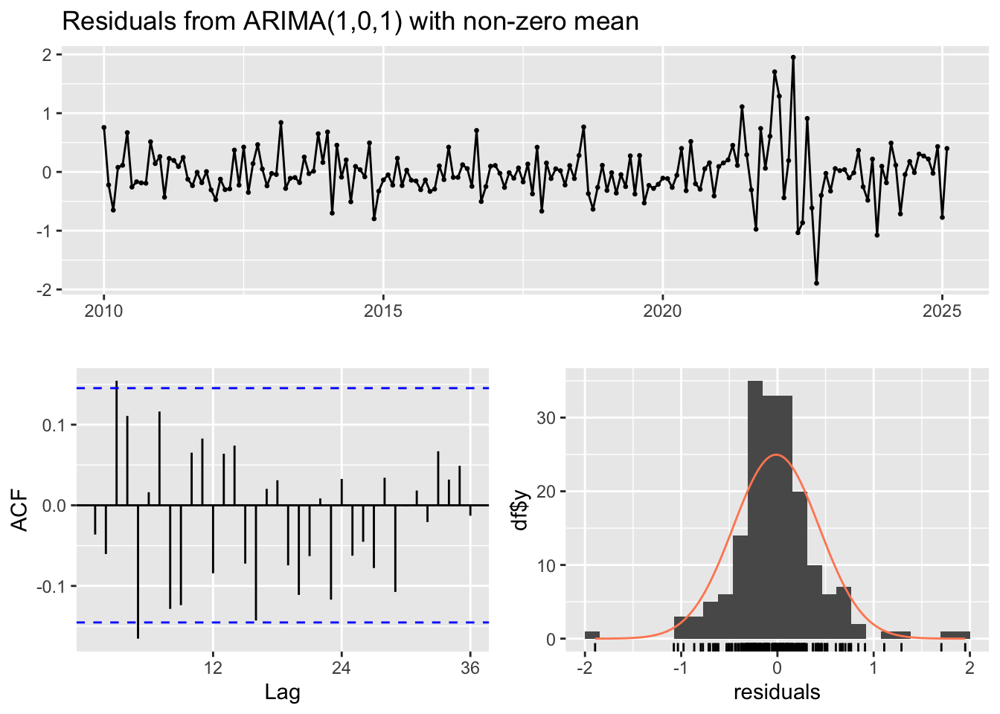
Ljung-Box test
data: Residuals from ARIMA(1,0,1) with non-zero mean
Q* = 40.21, df = 22, p-value = 0.01022
Model df: 2. Total lags used: 24The residual diagnosis of the ARIMA(1,0,1) model selected by auto.arima() reveals that the residual time series are generally stable and volatile, and the distribution is close to normal; however, the autocorrelation of some of the lags in the ACF plots slightly exceeds the confidence intervals, and the Ljung-Box test result of p = 0.0068 rejects the original hypothesis that “the residuals are white noise”. Ljung-Box test p = 0.0068, rejecting the original hypothesis of “residuals are white noise”.
forecast_111 <- forecast(model_111, h = 12, level = c(80, 95))
autoplot(forecast_111) +
ggtitle("Forecast from ARIMA(1,1,1)") +
xlab("Time") +
ylab("Natural Gas Price")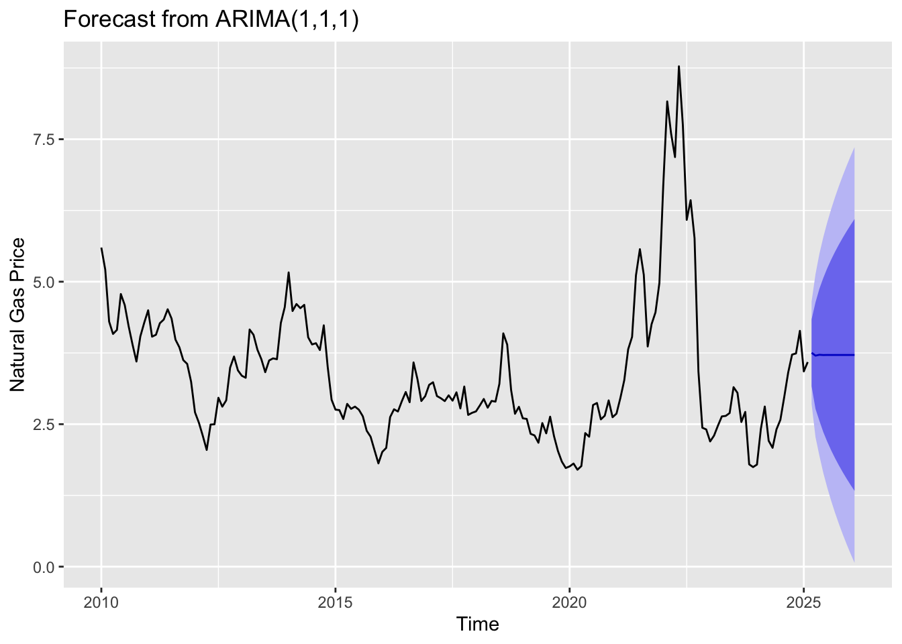
The ARIMA (1,1,1) forecasts of natural gas prices over the next 12 periods indicate a stable price trend, with the point forecasts changing little from recent observations. However, the forecast range widens significantly, reflecting a high degree of uncertainty and recent historical volatility. The model predicts that while average prices are not expected to change dramatically, there could still be large deviations in prices in the future, which could be caused by geopolitical events, supply shocks, or seasonal demand changes
n <- length(ts_natgas_monthly)
train <- window(ts_natgas_monthly, end = c(time(ts_natgas_monthly)[n - 12]))
test <- window(ts_natgas_monthly, start = c(time(ts_natgas_monthly)[n - 11]))
fit_arima <- Arima(train, order = c(1,1,1))
fcast_arima <- forecast(fit_arima, h = 12)
fcast_mean <- meanf(train, h = 12)
fcast_naive <- naive(train, h = 12)
fcast_drift <- rwf(train, h = 12, drift = TRUE)
fcast_snaive <- snaive(train, h = 12)
acc_all <- rbind(
ARIMA = accuracy(fcast_arima, test)[2, c("RMSE", "MAE", "MAPE")],
Mean = accuracy(fcast_mean, test)[2, c("RMSE", "MAE", "MAPE")],
Naive = accuracy(fcast_naive, test)[2, c("RMSE", "MAE", "MAPE")],
Drift = accuracy(fcast_drift, test)[2, c("RMSE", "MAE", "MAPE")],
SNaive = accuracy(fcast_snaive, test)[2, c("RMSE", "MAE", "MAPE")]
)
print(round(acc_all, 3)) RMSE MAE MAPE
ARIMA 0.832 0.688 20.494
Mean 0.718 0.579 22.303
Naive 0.932 0.765 22.319
Drift 1.059 0.870 25.271
SNaive 1.167 0.939 28.095df_all <- tibble(
Date = time(test),
ARIMA = fcast_arima$mean,
Mean = fcast_mean$mean,
Naive = fcast_naive$mean,
SNaive = fcast_snaive$mean
) %>%
pivot_longer(-Date, names_to = "Model", values_to = "Forecast")
df_hist <- tibble(
Date = time(ts_natgas_monthly),
Price = as.numeric(ts_natgas_monthly)
)
ggplot() +
geom_line(data = df_hist, aes(x = Date, y = Price), color = "black") +
geom_line(data = df_all, aes(x = Date, y = Forecast, color = Model), linewidth = 1.2) +
labs(title = "Forecast Comparison with Baseline Models",
x = "Time", y = "Natural Gas Price") +
theme_minimal() +
scale_color_manual(values = c("ARIMA" = "brown", "Mean" = "yellowgreen",
"Naive" = "cyan", "SNaive" = "mediumorchid"))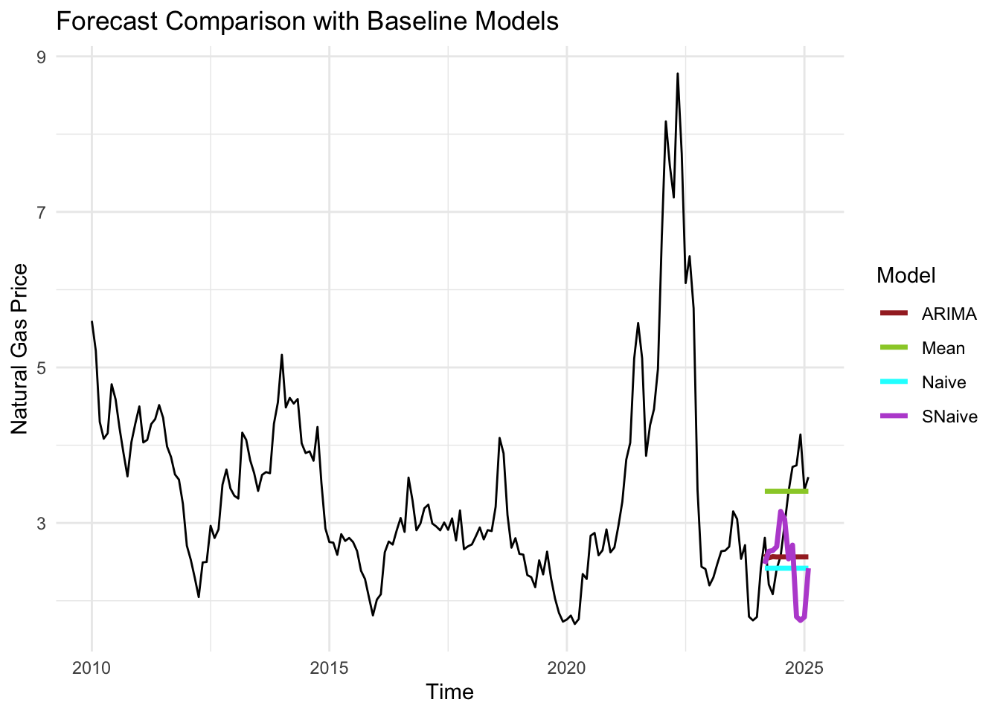
df_consumption <- read.csv("Natural_Gas_Summary.csv",skip = 6) %>%
filter(!is.na(Month)) %>%
mutate(
Year = as.numeric(sub(".* ([0-9]{4})$", "\\1", Month)),
Month_Num = match(substr(Month, 1, 3), month.abb)
) %>%
arrange(Year, Month_Num)
df_cons <- df_consumption %>%
select(Month, Year, Month_Num,
`U.S..Natural.Gas.Total.Consumption..MMcf..MMcf`) %>%
rename(TotalConsumption = `U.S..Natural.Gas.Total.Consumption..MMcf..MMcf`) %>%
mutate(
TotalConsumption = as.numeric(TotalConsumption),
Date = as.Date(sprintf("%d-%02d-01", Year, Month_Num))
)
first_valid_index <- which(!is.na(df_cons$TotalConsumption))[1]
start_year <- df_cons$Year[first_valid_index]
start_month <- df_cons$Month_Num[first_valid_index]
ts_trimmed <- ts(na.omit(df_cons$TotalConsumption),
start = c(start_year, start_month),
frequency = 12)
ts_diff1 <- diff(ts_trimmed, differences = 1)ggAcf(ts_diff1, lag.max = 48) +
ggtitle("ACF of First Differenced Series")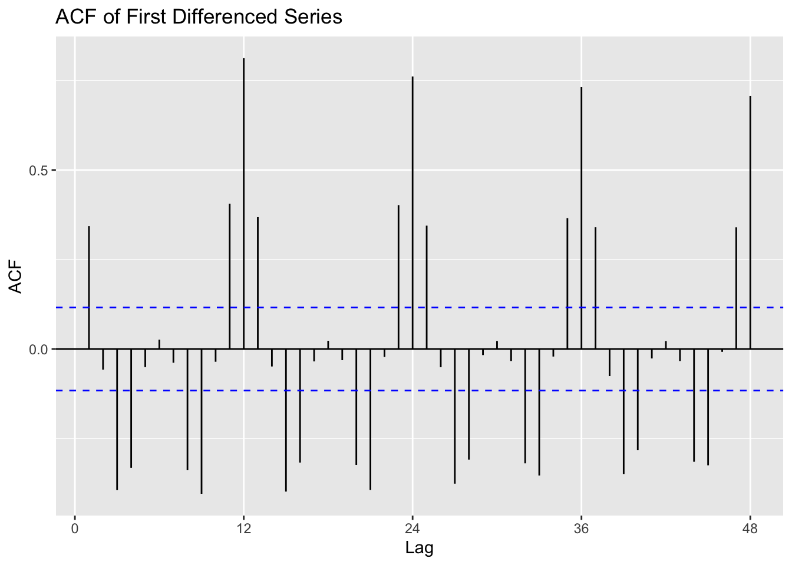
ggPacf(ts_diff1, lag.max = 48) +
ggtitle("PACF of First Differenced Series")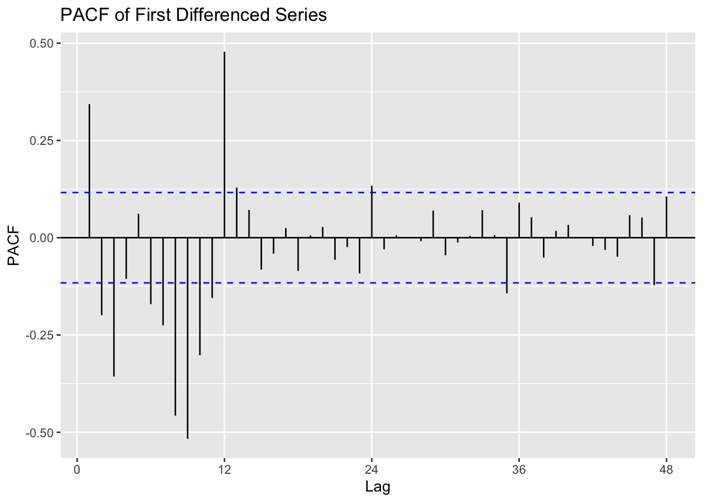
ts_diff_seasonal <- diff(ts_diff1, lag = 12)
ggAcf(ts_diff_seasonal, lag.max = 48) +
ggtitle("ACF of Seasonally First Differenced Series")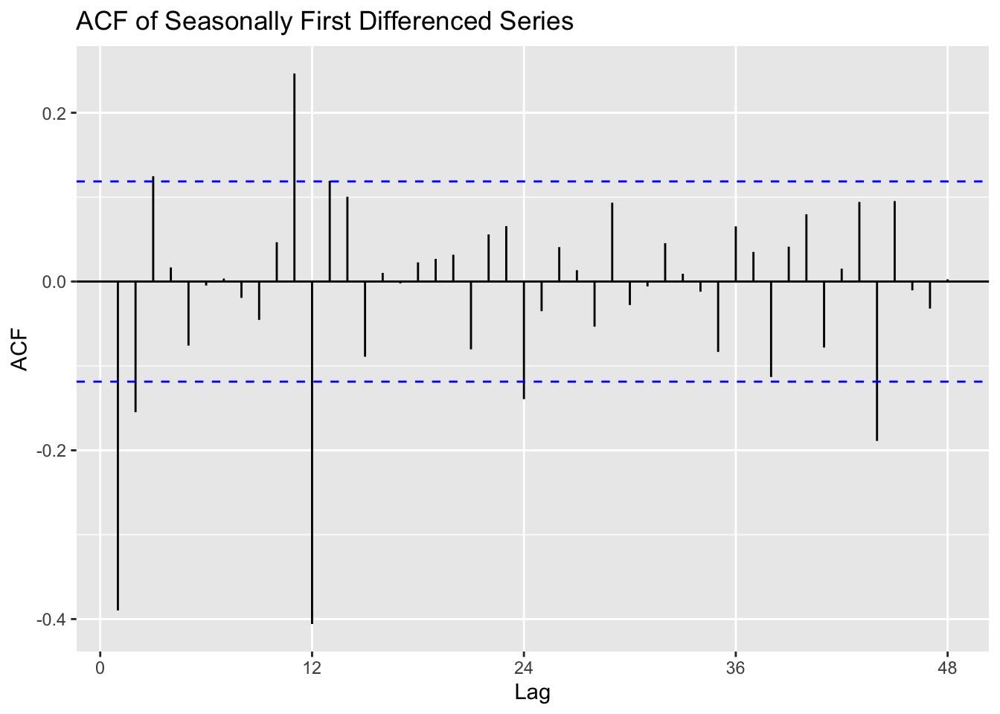
ggPacf(ts_diff_seasonal, lag.max = 48) +
ggtitle("PACF of Seasonally Differenced Series")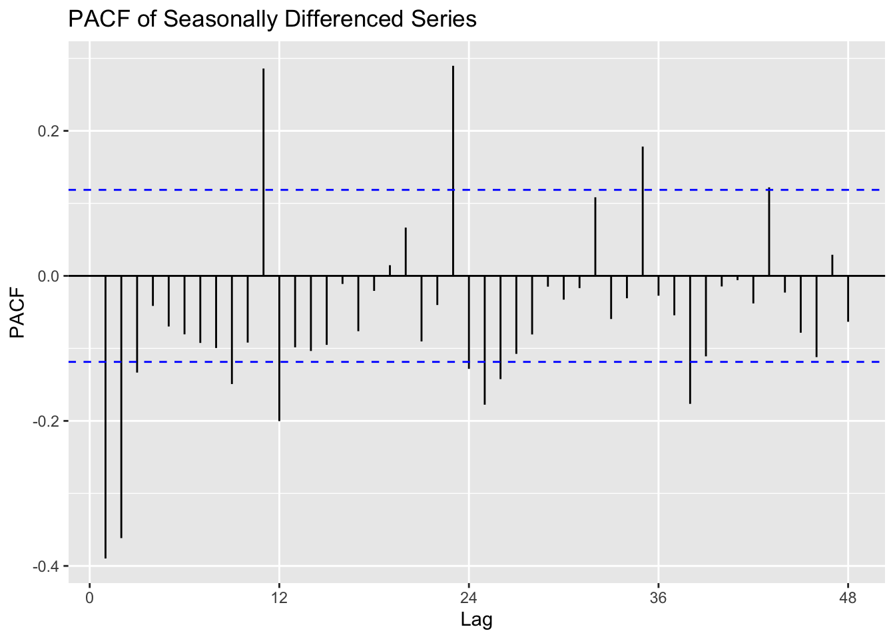
The original series is non-stationary, so first-order non-seasonal differencing is used (d = 1); the ACF after the first differencing is significant at lag 1 (q = 1), and the ACF is significant at lag 1 (p = 1). At the same time, the series showed strong annual cyclical fluctuations, so we performed a seasonal differencing (d = 1); the ACF after the seasonal differencing was significant at lag 12 (q = 1); and the PACF had no significant truncation feature at the seasonal lag, so the seasonal AR term was set to 0 (p = 0)
library(astsa)
sarima(ts_trimmed,
p = 1, d = 1, q = 1,
P = 0, D = 1, Q = 1,
S = 12)initial value 11.990868
iter 2 value 11.754827
iter 3 value 11.657875
iter 4 value 11.648092
iter 5 value 11.632667
iter 6 value 11.621476
iter 7 value 11.614114
iter 8 value 11.608385
iter 9 value 11.600413
iter 10 value 11.596024
iter 11 value 11.592405
iter 12 value 11.592125
iter 13 value 11.591115
iter 14 value 11.591114
iter 14 value 11.591114
final value 11.591114
converged
initial value 11.596775
iter 2 value 11.595523
iter 3 value 11.595109
iter 4 value 11.594832
iter 5 value 11.594798
iter 6 value 11.594792
iter 6 value 11.594792
iter 6 value 11.594792
final value 11.594792
converged
<><><><><><><><><><><><><><>
Coefficients:
Estimate SE t.value p.value
ar1 0.3296 0.0743 4.4332 0
ma1 -0.9019 0.0393 -22.9314 0
sma1 -0.8225 0.0375 -21.9371 0
sigma^2 estimated as 11142182227 on 270 degrees of freedom
AIC = 26.05677 AICc = 26.05709 BIC = 26.10965
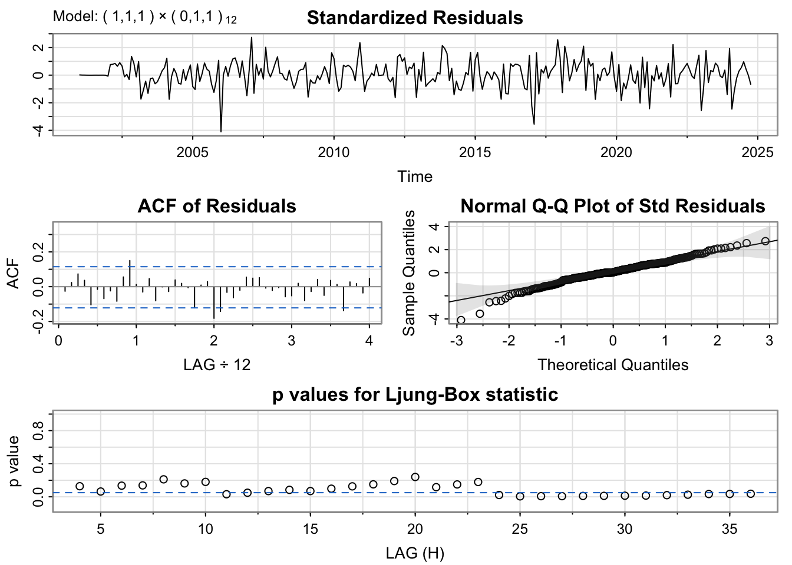
The time-series plot of the standardized residuals shows that the standardized residuals fluctuate around 0, with no obvious trend or seasonal structure, the fluctuations are stable, and no extreme outliers are observed. This indicates that the model captures the dynamics of the original series well.The ACF plot shows that the autocorrelation coefficients of most of the lagged points in the ACF plot of the residuals fall within the 95% confidence intervals (between the blue dotted lines), which suggests that there is no significant autocorrelation in the residuals series. The Q-Q plots of the standardized residuals show that the points fall roughly around the diagonal line, indicating that the residuals are approximately normally distributed, and the p-value plots of the Ljung-Box test show that all p-values are above the significance level of 0.05, which means that the hypothesis of no autocorrelation in the residuals cannot be rejected.
\[ (1 - 0.3296 B)(1 - B)(1 - B^{12}) y_t = (1 - 0.9019 B)(1 - 0.8225 B^{12}) \varepsilon_t \]
auto_s_model <- auto.arima(ts_trimmed, seasonal = TRUE, stepwise = FALSE, approximation = FALSE)
print(auto_s_model)Series: ts_trimmed
ARIMA(1,0,1)(2,1,1)[12] with drift
Coefficients:
ar1 ma1 sar1 sar2 sma1 drift
0.8962 -0.5686 0.0005 -0.2273 -0.7219 3408.8871
s.e. 0.0557 0.1089 0.0761 0.0721 0.0615 558.5785
sigma^2 = 1.112e+10: log likelihood = -3561.24
AIC=7136.48 AICc=7136.9 BIC=7161.77The automatically selected model is different from the manually selected model. auto.arima selects the ARIMA(1,0,1)(2,1,1)[12] model without non-seasonal differencing (d=0) but with the drift term added, while the manual model uses the SARIMA(1,1,1)(0,1,1)[12]
fit_final <- Arima(ts_trimmed,
order = c(1,1,1),
seasonal = list(order = c(0,1,1), period = 12))
forecast_result <- forecast(fit_final, h = 12, level = c(80, 95))
autoplot(forecast_result) +
labs(title = "Forecast from SARIMA(1,1,1)(0,1,1)[12]",
y = "Natural Gas Consumption (MMcf)", x = "Time") +
theme_minimal()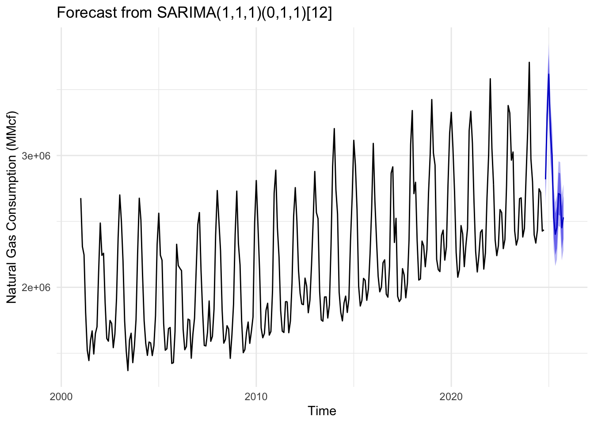
The model provides credible short-term forecasts that better reflect the seasonal and trend characteristics of natural gas consumption. The forecast results show that natural gas consumption will remain cyclical and show a slight upward trend in the coming year. The model and its forecasts can provide data support for energy policy making, supply chain planning and risk management.
ts_end <- end(ts_trimmed)
n_ahead <- 12
test_start_year <- ts_end[1]
test_start_month <- ts_end[2] - n_ahead + 1
if (test_start_month <= 0) {
test_start_year <- test_start_year - 1
test_start_month <- test_start_month + 12
}
train <- window(ts_trimmed, end = c(test_start_year, test_start_month - 1))
test <- window(ts_trimmed, start = c(test_start_year, test_start_month))
sarima_model <- Arima(train,
order = c(1,1,1),
seasonal = list(order = c(0,1,1), period = 12))
sarima_forecast <- forecast(sarima_model, h = length(test))
mean_forecast <- meanf(train, h = length(test))
naive_forecast <- naive(train, h = length(test))
snaive_forecast <- snaive(train, h = length(test))
accuracy_results <- rbind(
SARIMA = accuracy(sarima_forecast, test),
MEAN = accuracy(mean_forecast, test),
NAIVE = accuracy(naive_forecast, test),
SNAIVE = accuracy(snaive_forecast, test)
)
round(accuracy_results[, c("RMSE", "MAE", "MAPE")], 2) RMSE MAE MAPE
Training set 102241.2 76582.73 3.43
Test set 115135.3 95697.83 3.37
Training set 482869.3 398384.26 19.09
Test set 698839.7 584676.03 19.90
Training set 293632.8 235913.29 10.72
Test set 487902.2 336463.08 10.89
Training set 145711.0 113395.62 5.13
Test set 146447.3 97023.33 3.20autoplot(test, series = "Actual") +
autolayer(sarima_forecast$mean, series = "SARIMA") +
autolayer(mean_forecast$mean, series = "Mean") +
autolayer(naive_forecast$mean, series = "Naive") +
autolayer(snaive_forecast$mean, series = "Seasonal Naive") +
labs(title = "Forecast Comparison (Test Set)",
y = "Natural Gas Consumption", x = "Time") +
theme_minimal()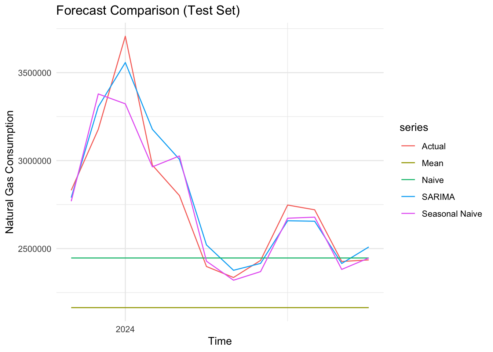
s <- 12
sarima_errors <- function(ts_data, h, order, seasonal_order) {
e <- tsCV(ts_data,
forecastfunction = function(y, h) {
fit <- Arima(y, order = order,
seasonal = list(order = seasonal_order, period = s))
forecast(fit, h = h)
},
h = h)
return(e)
}
e1 <- sarima_errors(ts_trimmed, h = 1,
order = c(1,1,1), seasonal_order = c(0,1,1))
e12 <- sarima_errors(ts_trimmed, h = 12,
order = c(1,1,1), seasonal_order = c(0,1,1))
rmse_1 <- sqrt(mean(e1^2, na.rm = TRUE))
rmse_12 <- sqrt(mean(e12^2, na.rm = TRUE))
cat("1-step RMSE:", round(rmse_1, 2), "\n")1-step RMSE: 113597.3 cat("12-step RMSE:", round(rmse_12, 2), "\n")12-step RMSE: 146786.6 df_storage <- read.csv("Natural_Gas_Summary.csv", skip = 6)%>%
filter(!is.na(Month)) %>%
mutate(
Year = as.numeric(sub(".* ([0-9]{4})$", "\\1", Month)),
Month_Num = match(substr(Month, 1, 3), month.abb)
) %>%
arrange(Year, Month_Num)
df_store <- df_storage %>%
select(
Month,
Year,
Month_Num,
`U.S..Total.Natural.Gas.in.Underground.Storage..Base.Gas...MMcf..MMcf`
) %>%
rename(TotalStorage = `U.S..Total.Natural.Gas.in.Underground.Storage..Base.Gas...MMcf..MMcf`) %>%
mutate(
TotalStorage = as.numeric(TotalStorage),
Date = as.Date(sprintf("%d-%02d-01", Year, Month_Num))
)
first_valid_index <- which(!is.na(df_store$TotalStorage))[1]
start_year <- df_store$Year[first_valid_index]
start_month <- df_store$Month_Num[first_valid_index]
ts_storage <- ts(
na.omit(df_store$TotalStorage),
start = c(start_year, start_month),
frequency = 12
)
ts_storage_diff1 <- diff(ts_storage, differences = 1)ggAcf(ts_storage_diff1, lag.max = 48) +
ggtitle("ACF of First Differenced Storage Series")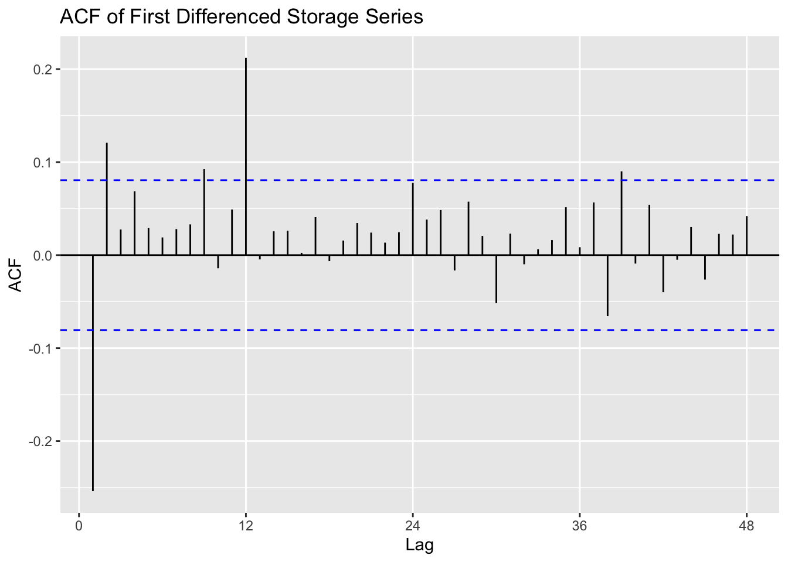
ggPacf(ts_storage_diff1, lag.max = 48) +
ggtitle("PACF of First Differenced Storage Series")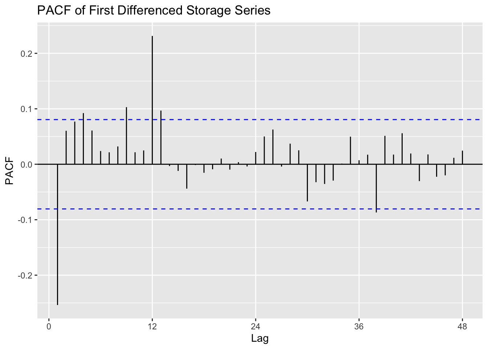
adf.test(ts_storage_diff1)
Augmented Dickey-Fuller Test
data: ts_storage_diff1
Dickey-Fuller = -6.917, Lag order = 8, p-value = 0.01
alternative hypothesis: stationaryWe changed the non-smooth data to smooth data in the EDA section and found that Natural gas storage has significant seasonality by observing the decomposition plots.
Looking at the plots of pacf and pacf, we find that ACF has significant peaks at lag1, lag2, and lag12, and PACF has significant peaks at lag1 and lag12. So p = 1,2 q = 1, P = 0,1, Q = 0,1. We only performed one differencing neither seasonal differencing, so d = 1, D = 0
library(forecast)
pdq <- expand.grid(p = 0:2, d = 1, q = 0:1)
PDQ <- expand.grid(P = 0:1, D = 0, Q = 0:1)
s <- 12
results <- data.frame(p=NA, d=NA, q=NA, P=NA, D=NA, Q=NA, AIC=NA, BIC=NA)
for(i in 1:nrow(pdq)) {
for(j in 1:nrow(PDQ)) {
p <- pdq$p[i]; d <- pdq$d[i]; q <- pdq$q[i]
P <- PDQ$P[j]; D <- PDQ$D[j]; Q <- PDQ$Q[j]
try({
fit <- Arima(ts_storage,
order = c(p,d,q),
seasonal = list(order = c(P,D,Q), period = s),
method = "ML")
results <- rbind(results, data.frame(p=p, d=d, q=q, P=P, D=D, Q=Q,
AIC=AIC(fit), BIC=BIC(fit)))
}, silent = TRUE)
}
}
results <- na.omit(results)
results_best <- results[order(results$AIC), ]
head(results_best, 5) p d q P D Q AIC BIC
23 2 1 1 1 0 0 13250.43 13272.35
25 2 1 1 1 0 1 13252.26 13278.56
24 2 1 1 0 0 1 13255.27 13277.19
19 1 1 1 1 0 0 13268.77 13286.30
11 2 1 0 1 0 0 13268.79 13286.32Based on the results of AIC and BIC we finally choose SARIMA (2, 1, 1) (1, 0, 0) [12] as our best model because this model has minimum AIC, BIC
storage_model <- Arima(ts_storage,
order = c(2, 1, 1),
seasonal = list(order = c(1, 0, 0), period = 12),
method = "ML")
summary(storage_model)Series: ts_storage
ARIMA(2,1,1)(1,0,0)[12]
Coefficients:
ar1 ar2 ma1 sar1
0.6077 0.3817 -0.9444 0.3054
s.e. 0.0447 0.0420 0.0241 0.0460
sigma^2 = 303330993: log likelihood = -6620.22
AIC=13250.43 AICc=13250.54 BIC=13272.35
Training set error measures:
ME RMSE MAE MPE MAPE MASE
Training set -83.06754 17342.82 9045.794 -0.002550476 0.2307734 0.2074543
ACF1
Training set 0.03360638checkresiduals(storage_model)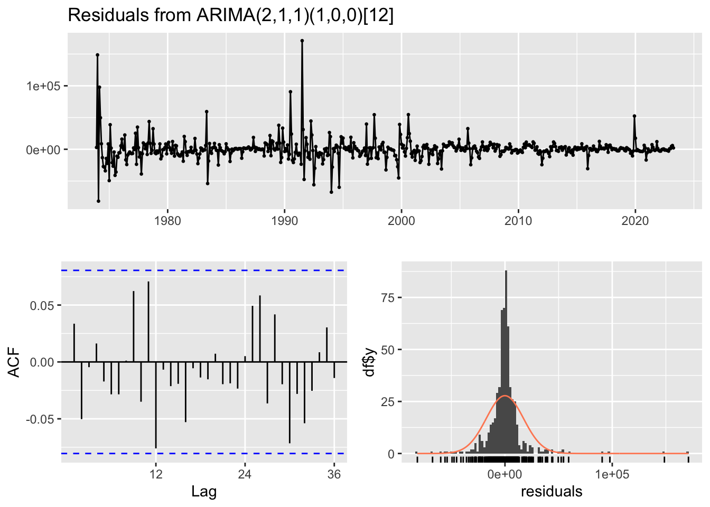
Ljung-Box test
data: Residuals from ARIMA(2,1,1)(1,0,0)[12]
Q* = 16.495, df = 20, p-value = 0.6855
Model df: 4. Total lags used: 24According to the results of the model diagnostics the residual plots showed random fluctuations and no structural patterns were seen; all lags in the ACF plots were within the confidence intervals; the residuals were approximately normally distributed; and the original hypothesis that the residuals were white noise was not rejected by the p-value of the Ljung-Box test = 0.6855.
Based on the coefficients in the summary, we can get the best model SARIMA (2, 1, 1) (1, 0, 0) [12] for the equation
\[ y_t - y_{t-1} = 0.6077(y_{t-1} - y_{t-2}) + 0.3817(y_{t-2} - y_{t-3}) + 0.3054(y_{t-12} - y_{t-13}) + \varepsilon_t - 0.9444\varepsilon_{t-1} \]
auto_storage <- auto.arima(ts_storage, seasonal = TRUE, stepwise = FALSE, approximation = FALSE)
summary(auto_storage)Series: ts_storage
ARIMA(1,2,1)(1,0,0)[12]
Coefficients:
ar1 ma1 sar1
-0.3832 -0.9520 0.3047
s.e. 0.0424 0.0177 0.0461
sigma^2 = 303141083: log likelihood = -6610.07
AIC=13228.14 AICc=13228.21 BIC=13245.67
Training set error measures:
ME RMSE MAE MPE MAPE MASE
Training set -1280.99 17337.39 9142.217 -0.03897126 0.2331809 0.2096656
ACF1
Training set 0.09840195The best model selected using auto.arima is SARIMA(1,2,1)(1,0,0) [12], which is different from the best model we selected manually, the reason for this is because auto.arima thinks that it should be differenced twice, whereas the data showed a smooth trend after we performed one differencing and did not need to perform a second differencing.
storage_final_model <- Arima(ts_storage,
order = c(2, 1, 1),
seasonal = list(order = c(1, 0, 0), period = 12),
method = "ML")
storage_forecast <- forecast(storage_final_model, h = 12, level = c(80, 95))
autoplot(storage_forecast) +
labs(title = "Forecast from SARIMA(2,1,1)(1,0,0)[12]",
y = "Natural Gas Storage)", x = "Time") +
theme_minimal()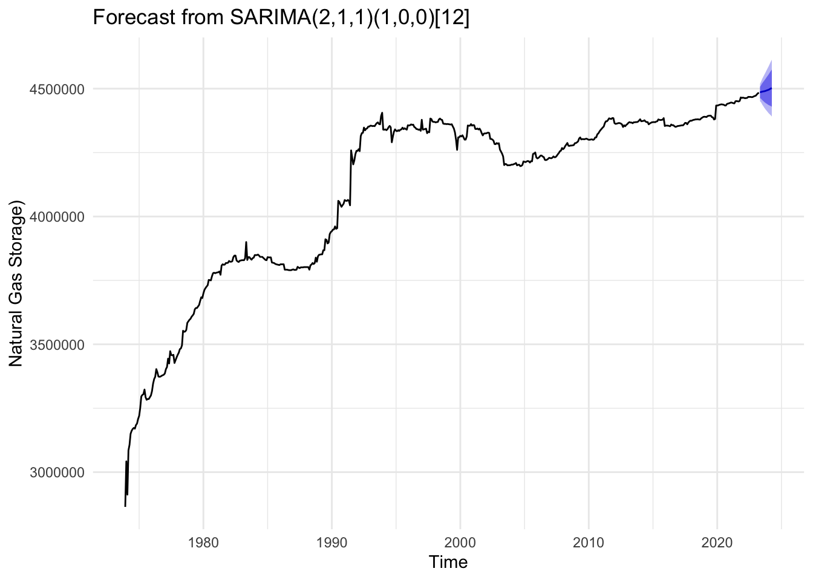
The SARIMA (2,1,1)(1,0,0)[12] model provides stable and well-bounded predictions of natural gas reserves for the next 12 periods. The point forecasts continue the upward trend seen in the historical data, and the forecast intervals remain narrow, indicating a high level of confidence in the model. The absence of large seasonal fluctuations in the forecasts suggests that the seasonal component is effectively modeled without the need for seasonal differencing. Given the strong residual diagnostic ability and relatively low prediction error, the model provides a reliable basis for short-term natural gas reserve forecasting.
train <- window(ts_storage, end = c(2022, 4))
test <- window(ts_storage, start = c(2022, 5))
naive_fit <- naive(train, h = 12)
snaive_fit <- snaive(train, h = 12)
mean_fit <- meanf(train, h = 12)
drift_fit <- rwf(train, drift = TRUE, h = 12)
sarima_fit <- Arima(train, order = c(2, 1, 1),
seasonal = list(order = c(1, 0, 0), period = 12))
sarima_forecast <- forecast(sarima_fit, h = 12)
comparison_df <- tibble(
Time = time(test),
Actual = as.numeric(test),
SARIMA = as.numeric(sarima_forecast$mean),
Naive = as.numeric(naive_fit$mean),
SeasonalNaive = as.numeric(snaive_fit$mean),
Mean = as.numeric(mean_fit$mean)
)
comparison_long <- comparison_df %>%
pivot_longer(cols = -Time, names_to = "Model", values_to = "Value")comparison_long <- comparison_df %>%
pivot_longer(cols = -Time, names_to = "Model", values_to = "Value")
ggplot(comparison_long, aes(x = Time, y = Value, color = Model)) +
geom_line(size = 1.2) +
labs(title = "Forecast Comparison (Test Set)",
y = "Natural Gas Consumption", x = "Time") +
theme_minimal() +
theme(axis.text.x = element_text(angle = 45, hjust = 1))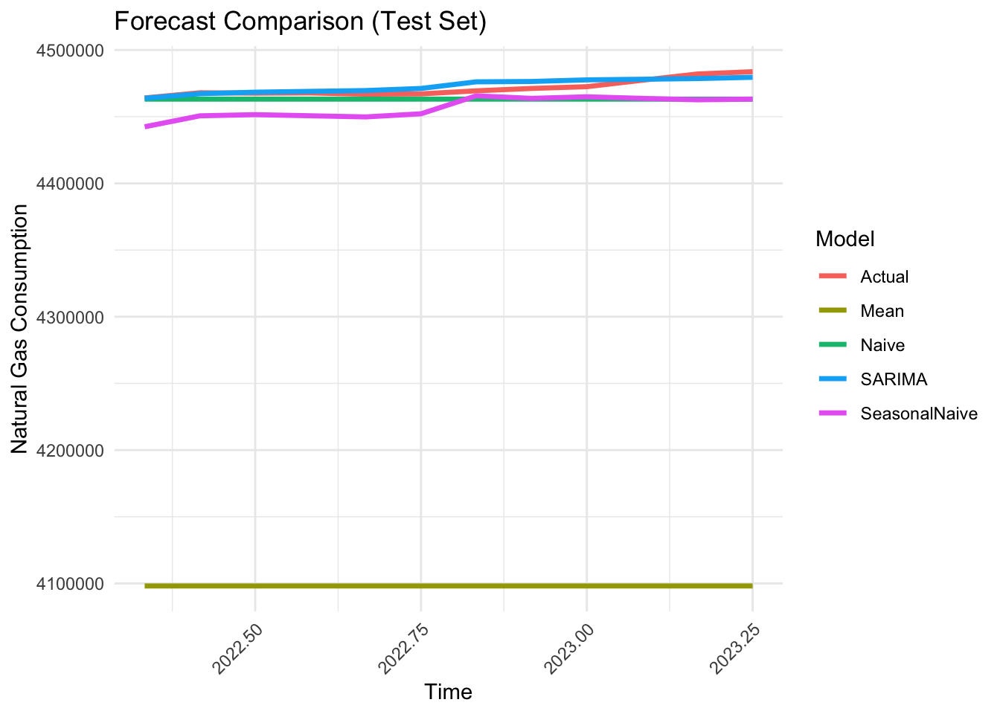
The figure compares actual natural gas consumption with forecasts from several models over the test period (2022.5 – 2023.4). Among all models, SARIMA exhibits the closest fit to the actual data, capturing the upward trend with minimal deviation.
Naive and Seasonal Naive models perform moderately well but underestimate the actual values in most months, and show less responsiveness to trend shifts.
The Mean forecast performs poorly, providing a static prediction that fails to capture any variation in the test
s <- 12
# 1 step
errors_1 <- tsCV(ts_storage,
forecastfunction = function(y, h) {
fit <- Arima(y, order = c(2,1,1),
seasonal = list(order = c(1,0,0), period = s))
forecast(fit, h = h)
},
h = 1)
# 12 steps
errors_12 <- tsCV(ts_storage,
forecastfunction = function(y, h) {
fit <- Arima(y, order = c(2,1,1),
seasonal = list(order = c(1,0,0), period = s))
forecast(fit, h = h)
},
h = s)
rmse_1 <- sqrt(mean(errors_1^2, na.rm = TRUE))
rmse_12 <- sqrt(mean(errors_12^2, na.rm = TRUE))
cat("1-step RMSE:", round(rmse_1, 2), "\n")1-step RMSE: 16806.19 cat("12-step RMSE:", round(rmse_12, 2), "\n")12-step RMSE: 33876.29 oil_prices <- tq_get("CL=F", from = "2010-01-01", to = Sys.Date())
clean_oil <- na.omit(oil_prices)
monthly_oil <- clean_oil %>%
mutate(month = floor_date(date, "month")) %>%
group_by(month) %>%
summarize(price = mean(adjusted, na.rm = TRUE))
ts_oil <- ts(monthly_oil$price, start = c(year(min(monthly_oil$month)),
month(min(monthly_oil$month))),
frequency = 12)
ts_oil_diff <- diff(ts_oil)
ts_oil_diff <- na.omit(ts_oil_diff)
ggAcf(ts_oil_diff, lag.max = 36) +
ggtitle("ACF of Differenced WTI Oil Price")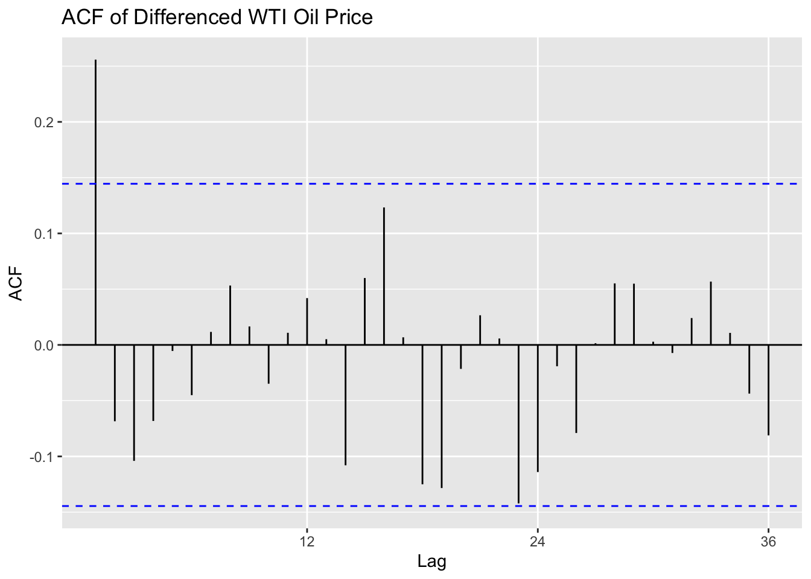
ggPacf(ts_oil_diff, lag.max = 36) +
ggtitle("PACF of Differenced WTI Oil Price")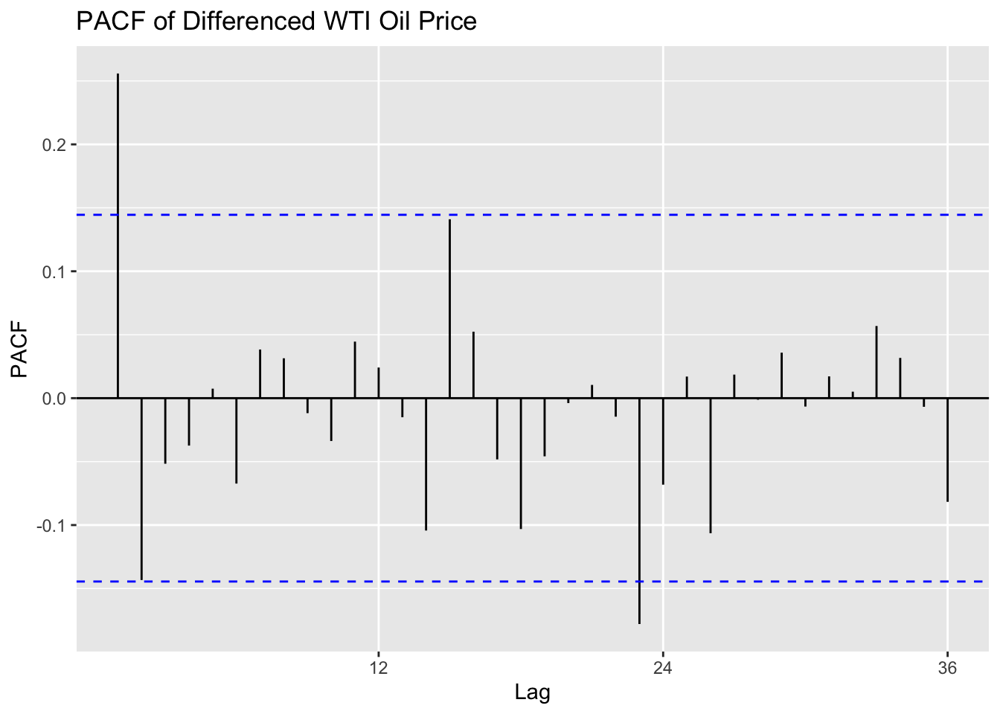
Differential ACF and PACF plots show that ACF has a significant peak at lag1, so q=1, 2 PACF has significant peak at lag1 so p=1, 2 d = 1, because we performed the differencing process once
orders <- list(
c(1,1,1),
c(2,1,1),
c(1,1,2),
c(2,1,2)
)
results <- tibble(
Model = character(),
AIC = numeric(),
BIC = numeric()
)
for (order in orders) {
p <- order[1]
d <- order[2]
q <- order[3]
model_fit <- Arima(ts_oil, order = c(p, d, q))
model_name <- paste0("ARIMA(", p, ",", d, ",", q, ")")
results <- add_row(results,
Model = model_name,
AIC = AIC(model_fit),
BIC = BIC(model_fit))
}
results_sorted <- results %>% arrange(AIC)
print(results_sorted)# A tibble: 4 × 3
Model AIC BIC
<chr> <dbl> <dbl>
1 ARIMA(1,1,1) 1155. 1165.
2 ARIMA(2,1,1) 1155. 1168.
3 ARIMA(1,1,2) 1156. 1169.
4 ARIMA(2,1,2) 1157. 1173.Based on the results of AIC comparison of all models, ARIMA (1, 1, 1) has the lowest AIC and BIC, so we choose ARIMA (1, 1, 1) as the best model
oil_best_model <- Arima(ts_oil, order = c(1,1,1))
summary(oil_best_model)Series: ts_oil
ARIMA(1,1,1)
Coefficients:
ar1 ma1
-0.0719 0.3622
s.e. 0.2333 0.2173
sigma^2 = 30.52: log likelihood = -574.6
AIC=1155.21 AICc=1155.34 BIC=1164.85
Training set error measures:
ME RMSE MAE MPE MAPE MASE
Training set -0.08483503 5.479128 4.300869 -0.4904109 6.772687 0.2621331
ACF1
Training set 0.0004648666checkresiduals(oil_best_model)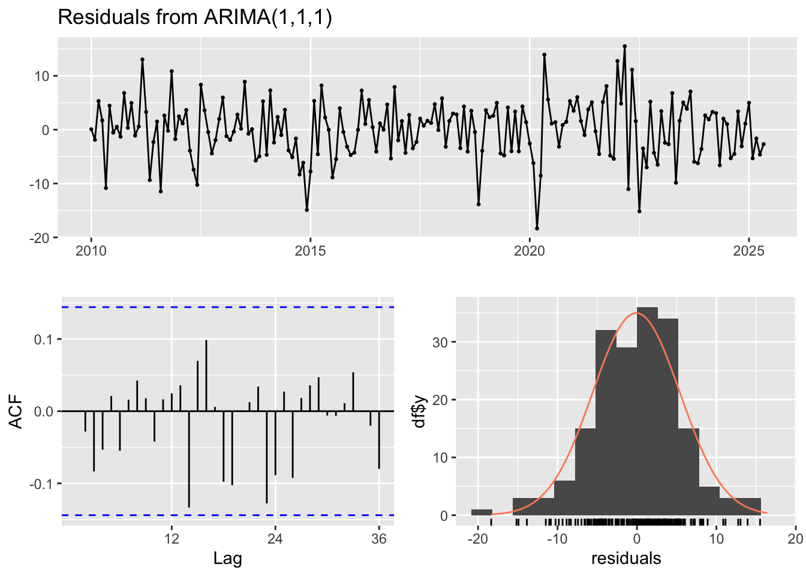
Ljung-Box test
data: Residuals from ARIMA(1,1,1)
Q* = 20.142, df = 22, p-value = 0.5742
Model df: 2. Total lags used: 24\[ \Delta y_t = -0.0747 \cdot \Delta y_{t-1} + \varepsilon_t + 0.3628 \cdot \varepsilon_{t-1} \]
The residual diagnostics for the ARIMA (1,1,1) model indicate that the residuals approximate white noise. The time plots show no clear pattern or trend, and the ACF plots indicate that the residuals are uncorrelated. The histogram of the residuals is very close to a normal distribution. In addition, the Ljung-Box test yielded a p-value of 0.5471 (> 0.05), confirming that the residuals were uncorrelated and that the model was adequately fitted to the data.
oil_auto_model <- auto.arima(ts_oil, seasonal = FALSE)
summary(oil_auto_model)Series: ts_oil
ARIMA(0,1,1)
Coefficients:
ma1
0.2993
s.e. 0.0714
sigma^2 = 30.37: log likelihood = -574.66
AIC=1153.32 AICc=1153.39 BIC=1159.75
Training set error measures:
ME RMSE MAE MPE MAPE MASE
Training set -0.08356688 5.480783 4.298566 -0.4727968 6.764429 0.2619928
ACF1
Training set -0.00714962The manually selected ARIMA(1,1,1) model and the automatically selected ARIMA(0,1,1) model differ in structure. While both include a moving average (MA(1)) term, the automatic model omits the autoregressive (AR) term. The lower AIC (1147.67 vs. 1150) justifies this simplification, suggesting a better trade-off between model fit and complexity.
forecast_oil <- forecast(oil_best_model, h = 12, level = c(80, 95))
autoplot(forecast_oil) +
ggtitle("Forecast from ARIMA(1,1,1)") +
xlab("Time") +
ylab("Oil Price")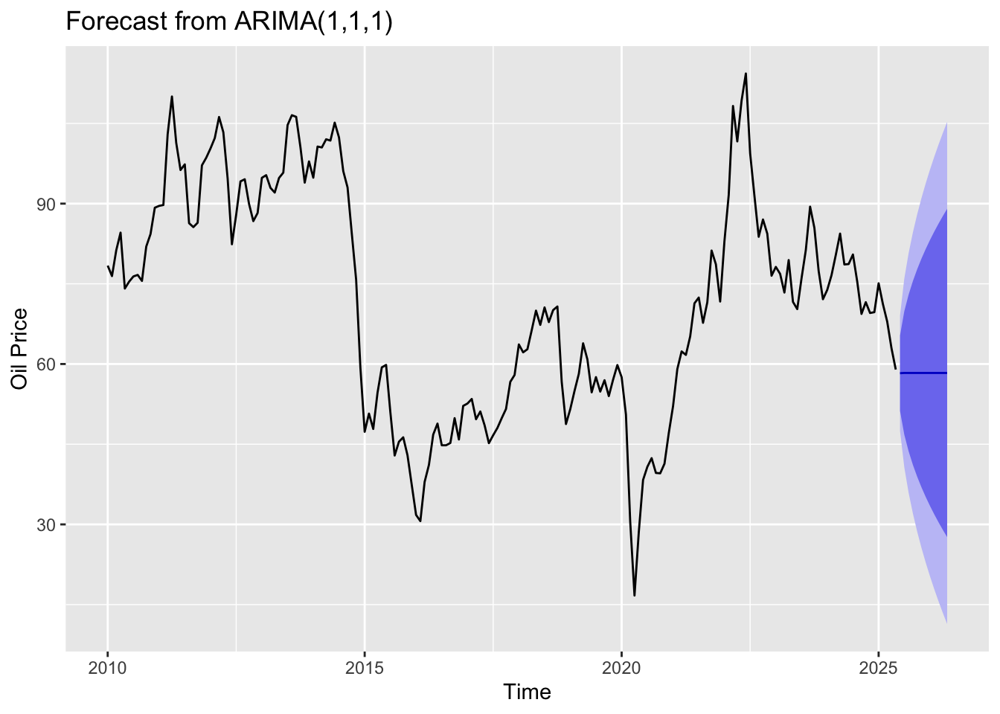
The forecast plot based on the ARIMA(1,1,1) model shows that the WTI crude oil price is expected to remain relatively stable over the next 12 months. The central forecast exhibits a modest upward trend, while the 80% and 95% confidence intervals widen over time, reflecting increasing uncertainty in longer-term projections. The model does not anticipate extreme volatility, indicating a return to more typical price behavior after recent fluctuations. Given that ARIMA models are linear and assume constant variance, any future shocks or structural breaks
train <- window(ts_oil, end = c(2024, 4))
test <- window(ts_oil, start = c(2024, 5), end = c(2025, 4))
h <- length(test)
naive_fit <- naive(train, h = h)
snaive_fit <- snaive(train, h = h)
mean_fit <- meanf(train, h = h)
drift_fit <- rwf(train, drift = TRUE, h = h)
arima_fit <- Arima(train, order = c(1,1,1))
arima_fc <- forecast(arima_fit, h = h)
pred_df <- tibble(
Time = time(test),
Actual = as.numeric(test),
Naive = as.numeric(naive_fit$mean),
SeasonalNaive = as.numeric(snaive_fit$mean),
Mean = as.numeric(mean_fit$mean),
Drift = as.numeric(drift_fit$mean),
ARIMA = as.numeric(arima_fc$mean)
)
pred_long <- pred_df %>%
pivot_longer(cols = -Time, names_to = "Model", values_to = "Value")
ggplot(pred_long, aes(x = Time, y = Value, color = Model)) +
geom_line(size = 1.2) +
labs(title = "Forecast Comparison",
x = "Time", y = "Oil Price") +
theme_minimal() +
theme(legend.title = element_blank())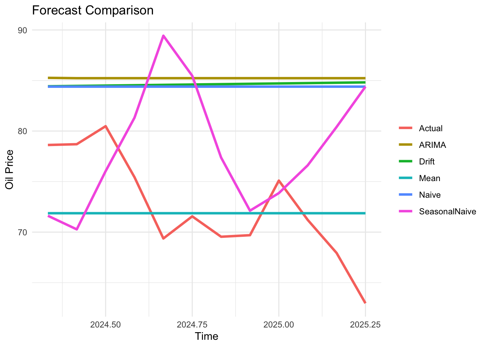
Visual comparison of forecast values against actual WTI oil prices reveals that the ARIMA(1,1,1) model clearly outperforms all benchmark methods. It is the only model capable of closely following the downward trend and local fluctuations observed in the actual data. In contrast, the Naive and Mean models produce constant or flat forecasts, while the Drift model fails to capture the declining trend. The Seasonal Naive model shows erratic swings that do not reflect the actual behavior of the series, confirming the lack of strong seasonality. These results highlight the effectiveness of ARIMA in capturing the underlying dynamics of oil prices.